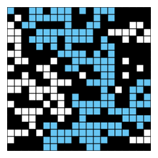

Write a program to estimate the value of the percolation threshold via Monte Carlo simulation.
Install our Java programming environment (optional). Install our custom IntelliJ programming environment by following these step-by-step instructions for your operating system [ Mac OS X · Windows · Linux ].
After following these instructions, the commands javac-algs4 and java-algs4
will classpath in algs4.jar,
which contains Java classes for I/O and all of the algorithms in the textbook.
To access a class in algs4.jar,
you need an import statement, such as the ones below:
import edu.princeton.cs.algs4.StdRandom; import edu.princeton.cs.algs4.StdStats; import edu.princeton.cs.algs4.WeightedQuickUnionUF;
Note that your code must be in the default package; if you use a package
statement, the autograder will reject your submission.
Percolation. Given a composite systems comprised of randomly distributed insulating and metallic materials: what fraction of the materials need to be metallic so that the composite system is an electrical conductor? Given a porous landscape with water on the surface (or oil below), under what conditions will the water be able to drain through to the bottom (or the oil to gush through to the surface)? Scientists have defined an abstract process known as percolation to model such situations.
The model. We model a percolation system using an n-by-n grid of sites. Each site is either open or blocked. A full site is an open site that can be connected to an open site in the top row via a chain of neighboring (left, right, up, down) open sites. We say the system percolates if there is a full site in the bottom row. In other words, a system percolates if we fill all open sites connected to the top row and that process fills some open site on the bottom row. (For the insulating/metallic materials example, the open sites correspond to metallic materials, so that a system that percolates has a metallic path from top to bottom, with full sites conducting. For the porous substance example, the open sites correspond to empty space through which water might flow, so that a system that percolates lets water fill open sites, flowing from top to bottom.)
The problem. In a famous scientific problem, researchers are interested in the following question: if sites are independently set to be open with probability p (and therefore blocked with probability 1 − p), what is the probability that the system percolates? When p equals 0, the system does not percolate; when p equals 1, the system percolates. The plots below show the site vacancy probability p versus the percolation probability for 20-by-20 random grid (left) and 100-by-100 random grid (right).


When n is sufficiently large, there is a threshold value p* such that when p < p* a random n-by-n grid almost never percolates, and when p > p*, a random n-by-n grid almost always percolates. No mathematical solution for determining the percolation threshold p* has yet been derived. Your task is to write a computer program to estimate p*.
Percolation data type.
To model a percolation system, create a data type Percolation with the following API:
public class Percolation {
// creates n-by-n grid, with all sites initially blocked
public Percolation(int n)
// opens the site (row, col) if it is not open already
public void open(int row, int col)
// is the site (row, col) open?
public boolean isOpen(int row, int col)
// is the site (row, col) full?
public boolean isFull(int row, int col)
// returns the number of open sites
public int numberOfOpenSites()
// does the system percolate?
public boolean percolates()
// test client (optional)
public static void main(String[] args)
}
Corner cases.
By convention, the row and column indices
are integers between 1 and n, where (1, 1) is the upper-left site:
Throw an IllegalArgumentException
if any argument to open(), isOpen(), or isFull()
is outside its prescribed range.
Throw an IllegalArgumentException in the constructor if n ≤ 0.
Performance requirements.
The constructor should take time proportional to n2; all methods should
take constant time plus a constant number of calls to the union–find methods
union(), find(), connected(), and count().
Monte Carlo simulation. To estimate the percolation threshold, consider the following computational experiment:
For example, if sites are opened in a 20-by-20 lattice according to the snapshots below, then our estimate of the percolation threshold is 204/400 = 0.51 because the system percolates when the 204th site is opened.

| 
| 
| 
|
By repeating this computation experiment T times and averaging the results, we obtain a more accurate estimate of the percolation threshold. Let xt be the fraction of open sites in computational experiment t. The sample mean provides an estimate of the percolation threshold; the sample standard deviation s; measures the sharpness of the threshold.
Assuming T is sufficiently large (say, at least 30), the following provides a 95% confidence interval for the percolation threshold:
To perform a series of computational experiments, create a data type PercolationStats
with the following API.
public class PercolationStats {
// perform independent trials on an n-by-n grid
public PercolationStats(int n, int trials)
// sample mean of percolation threshold
public double mean()
// sample standard deviation of percolation threshold
public double stddev()
// low endpoint of 95% confidence interval
public double confidenceLo()
// high endpoint of 95% confidence interval
public double confidenceHi()
// test client (see below)
public static void main(String[] args)
}
Throw an IllegalArgumentException in the constructor
if either n ≤ 0 or trials ≤ 0.
Also, include a main() method
that takes two command-line arguments
n and T, performs T independent
computational experiments (discussed above) on an n-by-n grid,
and prints the sample mean, sample standard deviation, and the
95% confidence interval for the percolation threshold.
Use
StdRandom
to generate random numbers; use
StdStats
to compute the sample mean and sample standard deviation.
~/Desktop/percolation> java-algs4 PercolationStats 200 100 mean = 0.5929934999999997 stddev = 0.00876990421552567 95% confidence interval = [0.5912745987737567, 0.5947124012262428] ~/Desktop/percolation> java-algs4 PercolationStats 200 100 mean = 0.592877 stddev = 0.009990523717073799 95% confidence interval = [0.5909188573514536, 0.5948351426485464] ~/Desktop/percolation> java-algs4 PercolationStats 2 10000 mean = 0.666925 stddev = 0.11776536521033558 95% confidence interval = [0.6646167988418774, 0.6692332011581226] ~/Desktop/percolation> java-algs4 PercolationStats 2 100000 mean = 0.6669475 stddev = 0.11775205263262094 95% confidence interval = [0.666217665216461, 0.6676773347835391]
Analysis of running time and memory usage (optional and not graded).
Implement the Percolation data type using the quick find algorithm in
QuickFindUF.
Stopwatch
to measure the total running time of PercolationStats for various values of
n and T.
How does doubling n affect the total running time?
How does doubling T affect the total running time?
Give a formula (using tilde notation) of the total running
time on your computer (in seconds) as a single function of both
n and T.
Percolation
object uses to model an n-by-n percolation system.
Count all memory that is used, including memory for the union–find data structure.
Now, implement the Percolation data type using the weighted quick union algorithm in
WeightedQuickUnionUF.
Answer the questions in the previous paragraph.
Web submission.
Submit a .zip file containing only
Submit only Percolation.java (using the weighted quick-union algorithm
from
WeightedQuickUnionUF)
and PercolationStats.java.
We will supply algs4.jar.
Your submission may not call library functions except those in
StdIn,
StdOut,
StdRandom,
StdStats,
WeightedQuickUnionUF,
and
java.lang.
For fun. Create your own percolation input file and share it in the discussion forums. For some inspiration, do an image search for “nonogram puzzles solved.”